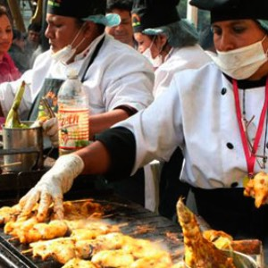

Salt Lake City
History
Resting at the foot of the Wasatch Mountains, and overlooking the largest inland
lake in the western US, Salt Lake City is home to a pioneering past, and an exciting future.
Prior to settling the Salt Lake Valley in 1847 by pioneers of the Church of Jesus
Christ of Latter-day Saints, it was home to the Ute and Shoshone Indians. The opening of the
mining
industry in the early 1860s and completion (1870) of the Utah Central Railroad, led it to be the
"Crossroads of the West" with its thriving hub of Western commerce. The city’s population grew
steadily
from that point on, leading it to be the contemporary city it is today.
Today
Today, Salt Laky City has an estimated population of about 200,567, and an estimated
population
of about 1,222,540 living within Salt Lake County. This rising population isn't surprising with
all of the
wonderful commodities that surround the city. With a quick 20-30 minute drive to Park City, you
will have
what many call "The Greatest Snow on Earth". Downtown Salt Lake offers a growing performing art
scene,
and a wide variety of award winning culinary experiences. A little further south, and you'll run
into the
"Silicon Slopes" with its growing tech scene.
Whether you're here to visit or to stay, Salt Lake City will surprise your with the
places to see
and things to do.
Upcoming Events
Peruvian Food Festival
April 9th-10th, 1:00PM-11:00PM
Join us to discover the secrets of The Peruvian gastronomy...Over the last decade or so, the rest of the world has begun to wake up to something Peruvians have always known: Exotic & Unique flavors
Salt Lake City Marathon
April 10th-25th
Voted Best Running Event in Utah by Salt Lake City Weekly in 2019, the University of Utah Health Salt Lake City Marathon presented by Bank of America is back for 2021 as a virtual fitness extravaganza. We are celebrating everything we love about Salt Lake City and the healthy lifestyle its inhabitants embody and practice.
HIVE Music Festival
August 6th-7th
The Hive Music Festival is poised to become a top hip hop music festival. It originated in 2020 with a lineup that featured Flatbush Zombies and Ski Mask the Slump God. However, after COVID-19 forced the cancellation of the 2020 show, the Hive Festival returned in 2021 with a lineup headlined by Post Malone.
Contact Information
175 E. 400 S. Salt Lake City, UT. 84111
801-555-5555
info@slcchamber.com


Business Hours
Sunday: Closed
Monday-Friday: 9:00AM-5:00PM
Saturday: 10:00AM-3:00PM